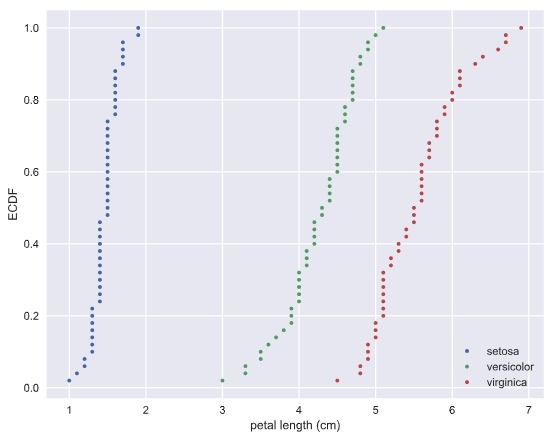
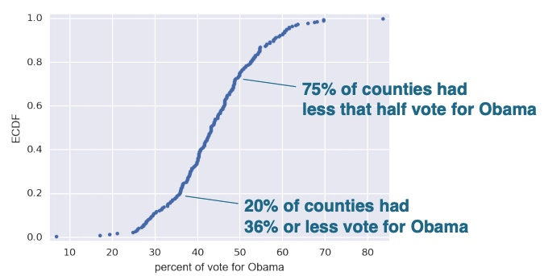
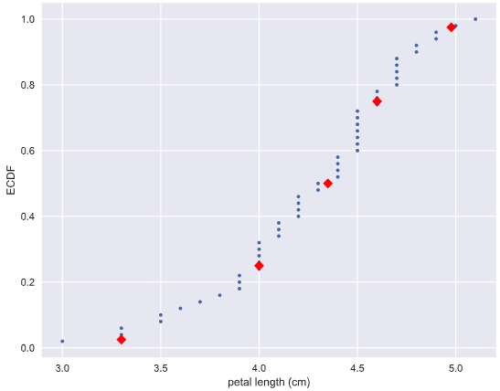
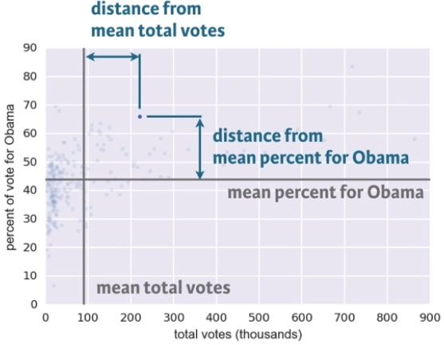
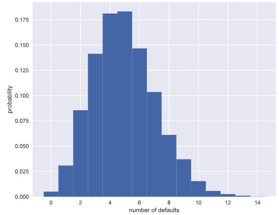
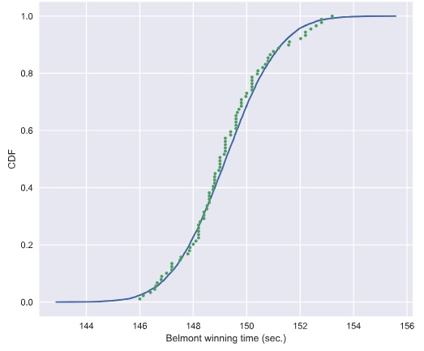
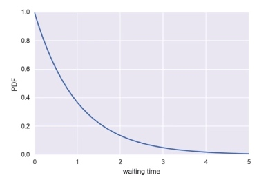

Graphical exploratory data analysis
Histogram
# Import plotting modules
import matplotlib.pyplot as plt
import seaborn as sns
# Set default Seaborn style
sns.set()
# Compute number of data points: n_data
n_data = len(versicolor_petal_length)
# Number of bins is the square root of number of data points: n_bins
n_bins = np.sqrt(n_data)
# Convert number of bins to integer: n_bins
n_bins = int(n_bins)
# Plot histogram of versicolor petal lengths
_ = plt.hist(versicolor_petal_length, bins = n_bins)
# Label axes
_ = plt.xlabel('petal length (cm)')
_ = plt.ylabel('count')
# Show histogram
plt.show()
Bee swarm plot
# Create bee swarm plot with Seaborn's default settings
_ = sns.swarmplot(x='species', y = 'petal length (cm)', data = df)
# Label the axes
_ = plt.xlabel('species')
_ = plt.ylabel('petal length (cm)')
# Show the plot
plt.show()

Empirical cumulative distribution functions
CDF gives the probability the measure of the speed of light will be less than the value of x axis.
def ecdf(data):
"""Compute ECDF for a one-dimensional array of measurements."""
# Number of data points: n
n = len(data)
# x-data for the ECDF: x
x = np.sort(data)
# y-data for the ECDF: y
y = np.arange(1, (n+1)) / n
return x, y
# Compute ECDFs
x_set, y_set = ecdf(setosa_petal_length)
x_vers, y_vers = ecdf(versicolor_petal_length)
x_virg, y_virg = ecdf(virginica_petal_length)
# Plot all ECDFs on the same plot
_ = plt.plot(x_set, y_set, marker='.', linestyle='none')
_ = plt.plot(x_vers, y_vers, marker='.', linestyle='none')
_ = plt.plot(x_virg, y_virg, marker='.', linestyle='none')
# Annotate the plot
plt.legend(('setosa', 'versicolor', 'virginica'), loc='lower right')
_ = plt.xlabel('petal length (cm)')
_ = plt.ylabel('ECDF')

Another example: the dataset contains the percentage of vote for Obama for each county. 
Plot percentile on ECDF
# Specify array of percentiles: percentiles
percentiles = np.array([2.5, 25, 50, 75, 97.5])
# Compute percentiles: ptiles_vers
ptiles_vers = np.percentile(versicolor_petal_length, percentiles)
# Plot the ECDF
_ = plt.plot(x_vers, y_vers, '.')
_ = plt.xlabel('petal length (cm)')
_ = plt.ylabel('ECDF')
# Overlay percentiles as red diamonds.
_ = plt.plot(ptiles_vers, percentiles/100, marker='D', color='red',
linestyle='none')
# Show the plot
plt.show()

Quantitative exploratory data analysis
Covariance and Correlation
# Make a scatter plot
_ = plt.plot(versicolor_petal_length, versicolor_petal_width, marker='.', linestyle='none')
# Label the axes
_ = plt.xlabel('versicolor petal length (cm)')
_ = plt.ylabel('versicolor petal width (cm)')
# Show the result
plt.show()

Pearson correlation coefficient: It is a comparison of the variability in the data due to codependence(the covariance) to the variability inherent to each variable independently (their standard deviations).
def pearson_r(x, y):
"""Compute Pearson correlation coefficient between two arrays."""
# Compute correlation matrix: corr_mat
corr_mat = np.corrcoef(x, y)
# Return entry [0,1]
return corr_mat[0,1]
Discrete variables
Given a set of data, you describe probabilistically what you might expect if you collect the same data again and again and again.
Bernoulli trial and binomial distribution
def perform_bernoulli_trials(n, p):
"""Perform n Bernoulli trials with success probability p
and return number of successes."""
# Initialize number of successes: n_success
n_success = 0
# Perform trials
for i in range(n):
# Choose random number between zero and one: random_number
random_number = np.random.random()
# If less than p, it's a success so add one to n_success
if random_number < p:
n_success += 1
return n_success
Try 1,000 times of 100 Bernoulli trial and save the number of loan defaults in to a list
# Initialize the number of defaults: n_defaults
n_defaults = [None] * 1000
# Compute the number of defaults
for i in range(1000):
n_defaults[i] = perform_bernoulli_trials(100, 0.05)
Compute the probability of n_default >= 10
# Compute the number of 100-loan simulations with 10 or more defaults: n_lose_money
n_lose_money = np.sum(n_defaults >= 10)
# Compute and print probability of losing money
print('Probability of losing money =', n_lose_money / len(n_defaults))
Output: Probability of losing money = 0.022
Probability mass function (PMF): The set of probabilities of discrete outcomes
Distribution: a mathematical description of outcomes
Binomial distribution: The number of r of successes in n Bernoulli trials with probability p of success, is Binomially distributed.
E.g. The number r of heads in 4 coin flips with probability 0.5 of heads, is Binomially distributed.
# Conduct the 4 coin flips for 1000 times
samples = np.random.binomial(4, 0.5, size = 1000)
Plot the Binomial PMF
Plot the PMF of the Binomial distribution as a histogram. The trick is setting up the edges of the bins to pass to plt.hist() via the bins keyword argument. We want the bins centered on the integers. So, the edges of the bins should be -0.5, 0.5, 1.5, 2.5, ...up to max(n_defaults) + 1.5
# Compute bin edges: bins
bins = np.arange(0, max(n_defaults) + 2) - 0.5
# Generate histogram
_ = plt.hist(n_defaults, bins = bins, normed=True)
# Label axes
_ = plt.xlabel("number of defaults")
_ = plt.ylabel("probability")
# Show the plot
plt.show()

Poisson distribution
Poisson event: the time of the next event is completely independent of when the previous event happened.
The parameter for poisson distribution: the average number of arrivals in a given length of time
Story: The number r of hits on a website in one hour with an average hit rage of 6 hits per hour is Poisson distributed.
Relationship between Binomial and Poisson distribution
Say we do a Bernoulli trial every minute for an hour, each with a success probability of 0.1. We would do 60 trials, and the number of successes is Binomially distributed, and we would expect to get about 6 successes. This is just like the Poisson story we discussed in the video, where we get on average 6 hits on a website per hour. So, the Poisson distribution with arrival rate equal to np approximates a Binomial distribution for n Bernoulli trials with probability p of success (with n large and p small). Importantly, the Poisson distribution is often simpler to work with because it has only one parameter instead of two for the Binomial distribution.
Continuous Variables
Probability density function (PDF)
PDF is mathematical description of the relative likelihood of observing a value of a continuous variable Area under the PDF gives probabilities
Test if a dataset is normally distributed
# Compute mean and standard deviation: mu, sigma
mu = np.mean(belmont_no_outliers)
sigma = np.std(belmont_no_outliers)
# Sample out of a normal distribution with this mu and sigma: samples
samples = np.random.normal(mu, sigma, size = 10000)
# Get the CDF of the samples and of the data
x_theor, y_theor = ecdf(samples)
x, y = ecdf(belmont_no_outliers)
# Plot the CDFs and show the plot
_ = plt.plot(x_theor, y_theor)
_ = plt.plot(x, y, marker='.', linestyle='none')
_ = plt.xlabel('Belmont winning time (sec.)')
_ = plt.ylabel('CDF')
plt.show()

Exponential Distribution
The waiting time between arrivals of a Poisson process is Exponentially distributed. It has a single parameter, the mean waiting time.

Source
https://www.datacamp.com/courses/statistical-thinking-in-python-part-1